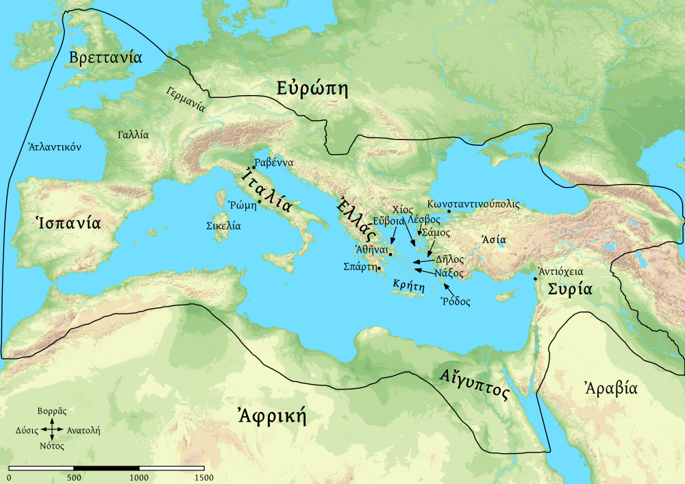

ΠΕΡΊΟΔΟΣ ΕΥΡΩΠΗΣ

ΓΡΑΜΜΑΤΙΚΗ
ἐνικὸν καὶ πληθυντικόν -- ὄνομα
[A]
- ὁ Νεῖλος ποταμός ἐστιν.
- ὁ Νεῖλος καὶ ὁ Ρῆνος ποταμοί εἰσιν.
τὸ μὲν ποταμὸς ἐνικόν ἐστιν. τὸ δὲ ποταμοὶ πληθυντικόν ἐστιν.
ἐνικόν· -ος, πληθυντικόν· -οι
[Β]
- ἡ Ἱσπανία ἐπαρχία Ρωμαϊκή ἐστιν
- ἡ Ἱσπανία καὶ ἡ Συρία ἐπαρχίαι Ρωμαϊκαί εἰσιν.
τὸ μὲν ἐπαρχία ἐνικόν ἐστιν. τὸ δὲ ἐπαρχίαι πληθυντικόν ἐστιν.
ἐνικόν· -α/η, πληθυντικόν· -αι
[Γ]
- τὸ Α καὶ τὸ Β γράμματά ἐστιν.
- καὶ τὸ Γ γράμμα ἐστίν.
τὸ μὲν γράμμα ένικόν ἐστιν. τὸ δὲ γράμματα πληθυντικόν ἐστιν.
ἐνικόν· --, πληθυντικόν· -τα
ἐνικὸν καὶ πληθυντικόν -- ῤῆμα
- ὁ Νεῖλος ποταμός ἐστιν.
- ὁ Νεῖλος καὶ ὁ Ρῆνος ποταμοί εἰσιν.
ἐνικόν· ἐστιν, πληθυντικόν· εἰσιν.
ΜΕΛΕΤΗΜΑ 'Α
ὁ Νεῖλος μοταμ[ός] ἐστιν. ὁ Νεῖλος καὶ ὁ Ρῆνος ποταμ[οί] εἰσιν. ἡ Σικελία ἐστὶν νῆσ[ος]. ἡ Κρήτη καὶ ἡ Σιλεκία ἐστὶ νῆσ[οί]. τὸ Α γραμμ[α] ἐστιν. τὸ Α καὶ τὸ Β ἐστί γραμμ[ατα].
ἡ Σπάρτη πόλ[ις] ἐστίν. αἱ Ἀθῆναι πόλις [ἐστίν]. ἡ Σπάρτη καἲ αἱ Ἀθῆναι πόλ[εις] εἰσίν. ἡ Σπάρτη ἐστὶ πόλις Ελληνικ[ή]. αἱ Ἀθῆναι ἐστὶ πόλις Ελληνικ[ή]. αἱ Ἀθῆναι καὶ ἡ Σπάρτη πόλεις Ελληνικ[αί] εἰσιν. ἡ Ρώμη οὐ ἐστιν πόλις Ελληνικ[ή], ἀλλὰ πόλις Ρωμαϊκ[ή]. ἡ Ραβέννα καὶ ἡ Ρώμη εἰσὶ πόλεις Ρωμαϊκ[αί].
ἡ Ἐλλάς ἐστιν ἐν τῇ Εὐρώπ[ῃ]. τε καὶ ἡ Ἰταλία ἐστὶν ἐν τ[ῇ] Εὐρώπ[ῃ]. ἡ δὲ Αἴγυπτος ἐν τ[ῇ] Εὐρώπ[ῃ] οὐκ ἔστιν, ἀλλὰ τ[ῇ] Ἀφρικ[ῇ]. ἆρα ἡ Αντιόχεια ἐν τ[ῇ] Ἀσί-- ἐστίν; ναί, ἐν τ[ῇ] Ἀσί[ᾳ] ἐστίν. ְַַׅׅ
τὸ Α καὶ Β γράμμ[ατα] εἰσιν. καὶ τὸ Γ ἐστὶ γράμμ[α]. τὸ μὲν Γ ἐστίν γράμμ[α] Ἐλληνικ[ά]. τὸ δὲ C ἔστι γραμμ[α] Ρωμαῖκ[όν]. τὸ μὲν C καὶ τὸ D εἰσὶ γράμμ[ατα] Ρωμαϊκ[ά]. τὸ δὲ Γ καὶ τὸ Δ εἰσὶ γράμμ[ατα] Ἐλληνικ[ά]. εἷς καὶ δύο ἀριθοί [εἰσιν]. τρεῖς ἀριθμ[ός] ἐστιν. Χίλια μέγ[ας] ἀριθμ[ός] ἐστιν. δύο ἐστὶν ἀριθμος μικρ[ός]. τε καὶ εἶς ἐστιν ἀριθμος μικ[ός]. χίλια δὲ μάγ[ος] αριθμ[ός] ἐστιν. δύο καὶ εἶς μικρ[οί] αριθμ[ί] εἰσιν.
ΜΕΛΕΤΗΜΑ 'Β
ὁ Νεῖλος [ποταμὸς] ἐστιν. ἡ Κρήτη [νῆσός] ἐστιν. τὸ Α [γράμμα] ἐστίν. ὁ Νεῖλος [ποταμός] μέγας ἐστίν. καὶ ὁ Νεῖλος ἐν τῇ [Ᾱ̓φρικῇ] ἐστιν. ὁ δὲ Ρῆνος ἐν [άρχῂ] Ρώμῃ ἐστίν. ἡ Σικελία [νῆσος] ἐστίν. ἡ Ρώμη [πόλις] ἐν τῇ Ἰταλίᾳ ἐστὶν. ἡ Σπάρτη [πόλις] ἐν τῇ Ἐλλάδι ἐστίν. ἡ Ρώμη καὶ ἡ Σπάρτη [πόλεις] εἰσίν. ἡ Ρώμη καὶ ἡ Σπάρνη πόλεις ἐν τῇ [Εὐρώπῃ] εἰσίν. ἡ μὲν Κρήτη [νῆσος] μικρά ἐστιν ἐν τῇ Ἐλλάδι. ἡ δὲ Βρεττανία [νῆσος] μεγάλη ἐστίν. ἡ Σικελία καὶ ἡ Κρήτη [νῆσοι] μικραί εἰσιν. καὶ ἡ Δῆλος ἐστὶν νῆσος μικρά ἐν [τῇ] Ἐλλάδι. η Δῆλος ἐστὶν νῆσος [μικρά] τε καί ἡ Κρήτη ἐστὶν νῆσος [μικρά].
ΜΕΛΕΤΗΜΑ 'Γ
- ποῦ ἐστιν αἱ Ἀθῆναι;
- ἆρα ἡ Σπάρτη ἐν τῇ Ἰταλία εστίν;
- ποῦ ἐστιν ἡ Ἐλλάς;
- ποῦ εἰσιν ὁ Νεῖλος καί ἡ Ἀἴγυπτος;
- ἆρα ἡ Αἴγυπτος ἐν τῇ Ἀσίᾳ εστίν;
- ποῦ εἰσιν ἡ Ρώμη καί ἡ Ραβέννα;
- τίς ἐστιν αἱ Ἀτῆναι;
- τίς ἐστιν εἷς;
- ἆρα τὸ Δ γράμμα Ρωμαϊκή ἐστιν;
- ἆρα δύο μεγας αριθμός ἐστιν;
Some maps, charts, or drawings produced with Map Creator software from fmosoft.com. Used by permission. All rights reserved.